Step-by-step operational guide for the Invendis Inventory & Distribution platform — Web Portal and Mobile Field App.
| Account | Password | Role | Access | |
|---|---|---|---|---|
| Admin | mohamedbangura@avdp.org.sl | Invendis@2024 | Admin | Full system access |
| Field Officer | mohamedamadubangura@gmail.com | Invendis@2024 | FieldOfficer | Mobile app only |
The login screen is the entry point for all web portal users. After authentication, the Dashboard provides a real-time operational snapshot including farmer counts, active campaigns, dispatches in transit, and today's delivery totals.
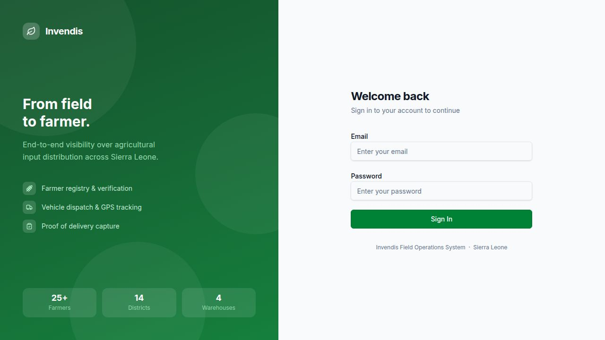
/loginmohamedbangura@avdp.org.sl and password Invendis@2024/dashboard with summary cards — total farmers, active campaigns, dispatches in transit, and today's PoD count. Quick-action buttons are visible at the top.
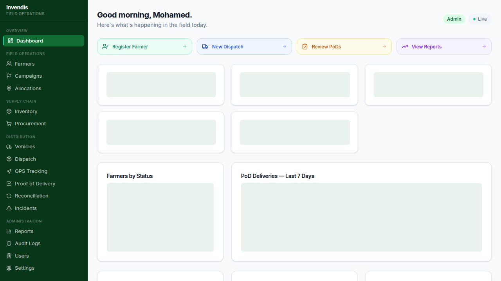
Master data — districts, warehouses, value chains, chiefdoms, distribution sites, and input items — must be configured before running campaigns. The Settings module provides tabbed management for all reference data.
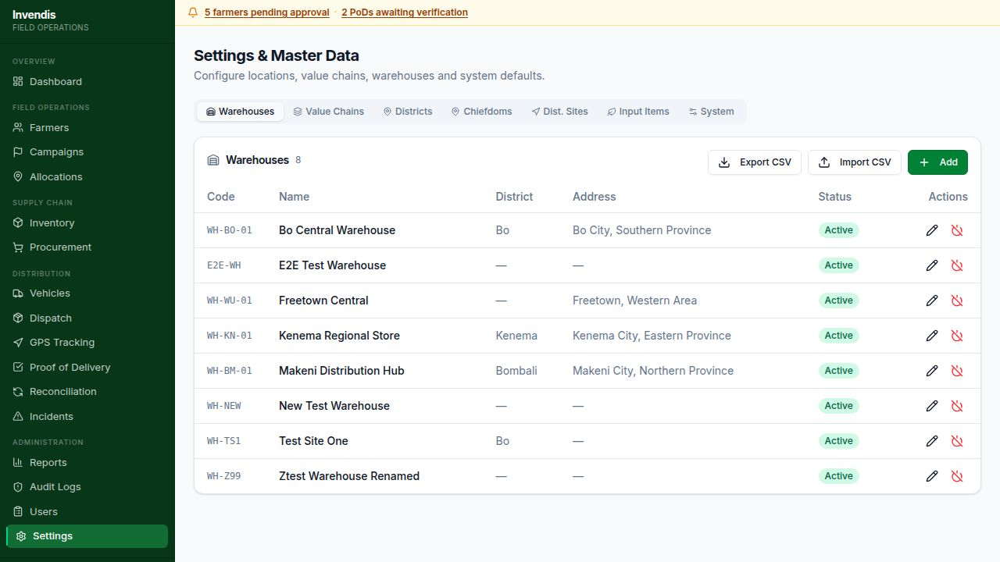
Test District and choose a region → SaveTest Warehouse, District Test District, Address, Capacity 5000The Farmer Registry is the foundation of the distribution system. Every farmer must be registered and approved before they can receive inputs. Each approved farmer receives a unique QR code used by field officers for delivery verification.
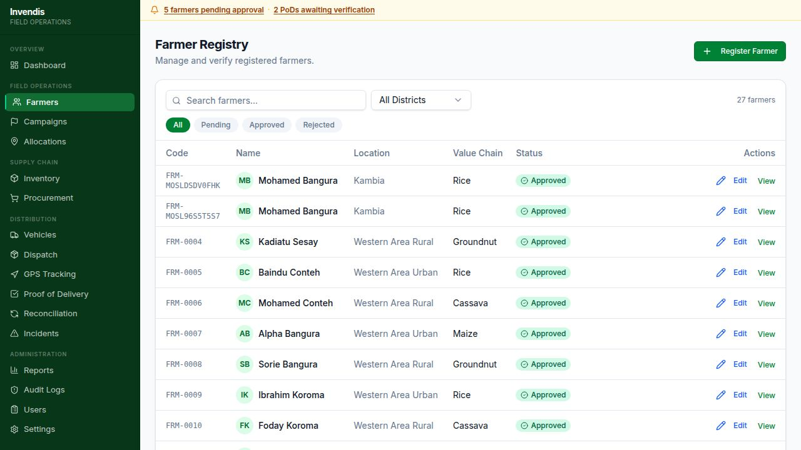
Fatmata · Last Name: Koroma+23276001234 · Gender: FemaleMakeni Central/farmers and search Koroma — verify the farmer appearsStock is received against a reference order. Once received, units become Available in the warehouse balance and can be allocated to manifests for dispatch.
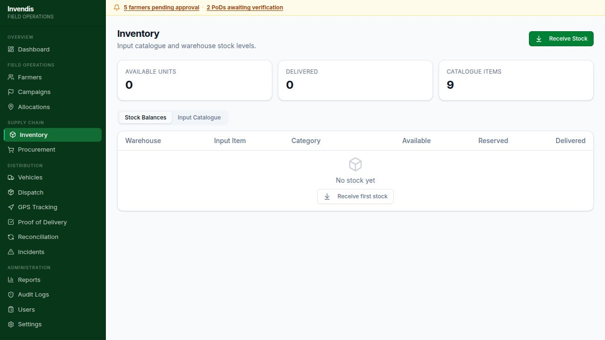
Test Warehouse, Input Item Improved Rice Seed, Quantity 500, Reference PO-TEST-001Campaigns organise a season's distribution by district and value chain. A campaign must be Active before dispatches can be created against it. Allocations within the campaign define which approved farmers receive inputs and in what quantities.
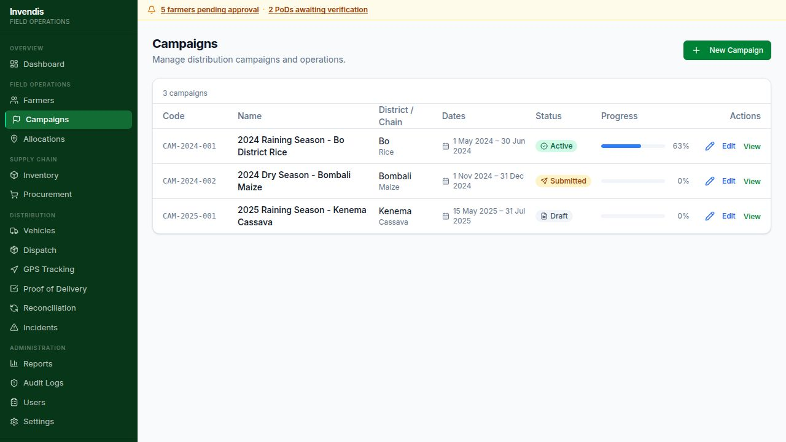
2025 Test Season — Test District, District Test District, Warehouse Test Warehouse, start/end datesFatmata Koroma, set quantity 50 kg → Save/allocations shows all farmer allocations across every campaign.
A manifest is a vehicle load assigned to a campaign and warehouse. The dispatch workflow progresses through Draft → Approved → In Transit. Once In Transit, the manifest is visible to the field officer's app for PoD confirmation.
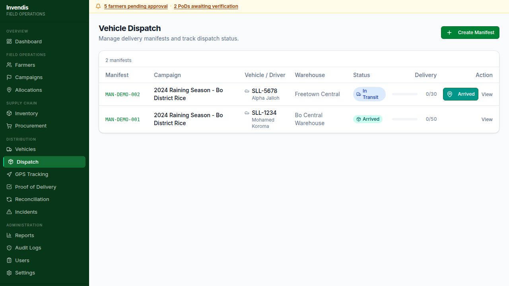
MAN-XXXXXX, status Draft.50 → SaveGPS Tracking displays real-time vehicle positions on an interactive map with automatic 30-second refresh. Each pin shows the manifest, driver, and last known speed.
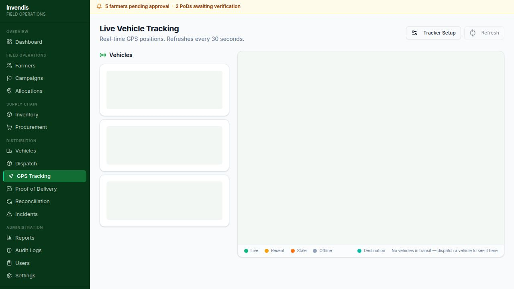
Every delivery confirmed via the field app creates a PoD record on the server. Supervisors use this module to verify delivery evidence — GPS location, OTP confirmation, and biometric face match — and manage exceptions.
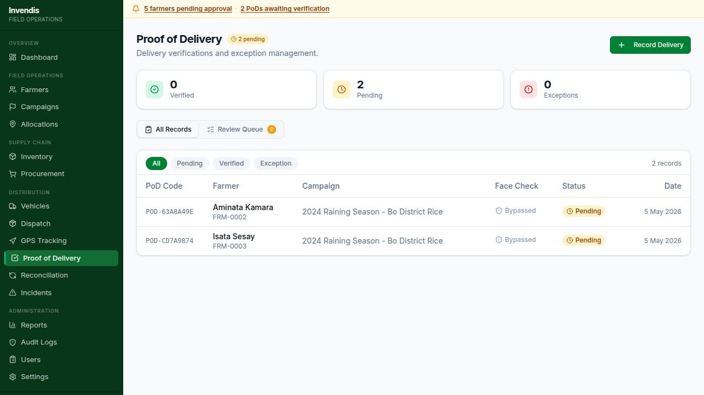
After a vehicle returns, the warehouse manager reconciles loaded vs. delivered vs. returned quantities. Approved reconciliations adjust the warehouse balance and flag unexplained variance for investigation.
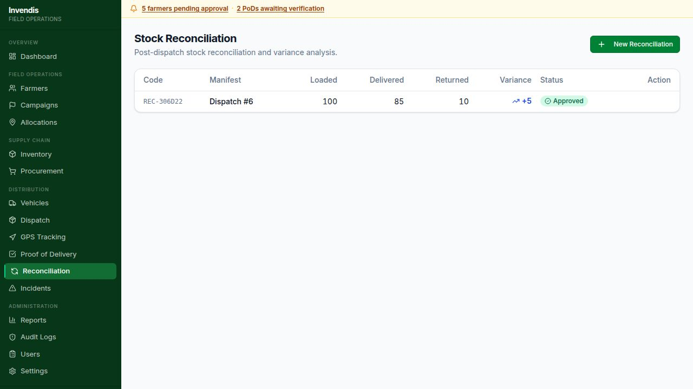
Test Warehouse and the manifest from Scenario 6Field officers report distribution issues via the mobile app. The web portal provides a management view where incidents can be reviewed and formally resolved with supervisor notes.
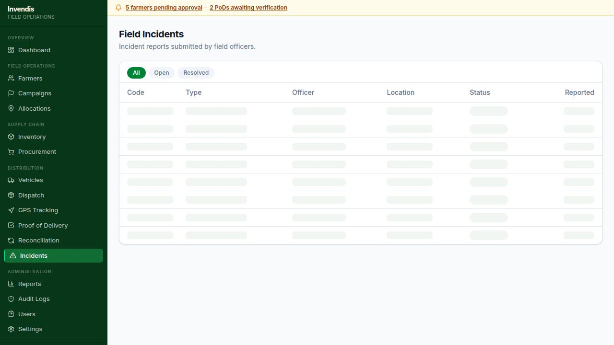
Issue reviewed and addressed by district coordinatorFour report tabs aggregate operational data across all modules. Every report can be exported to CSV for external analysis or donor reporting.
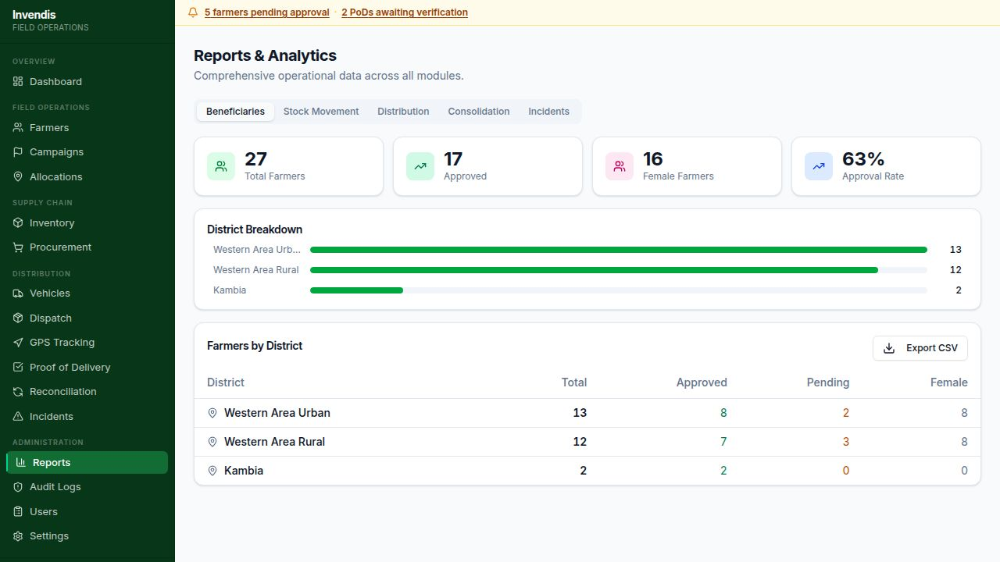
| Report Tab | What It Shows | Primary Use |
|---|---|---|
| Beneficiaries | Farmers by district — totals, approved, female counts, approval rate | Social targeting & gender equity monitoring |
| Stock Movement | All transactions (RECEIVE, ISSUE, TRANSFER) with date, item, warehouse, quantity | Supply chain audit & stock flow verification |
| Distribution | Each manifest with campaign, warehouse, status, and % completion | Delivery progress tracking per campaign |
| Incidents | All field incidents with officer names, types, and resolution status | Field risk management & resolution tracking |
The User Management page is the sole interface for creating system accounts and controlling access. Only Admins can create, edit, deactivate, or delete users.
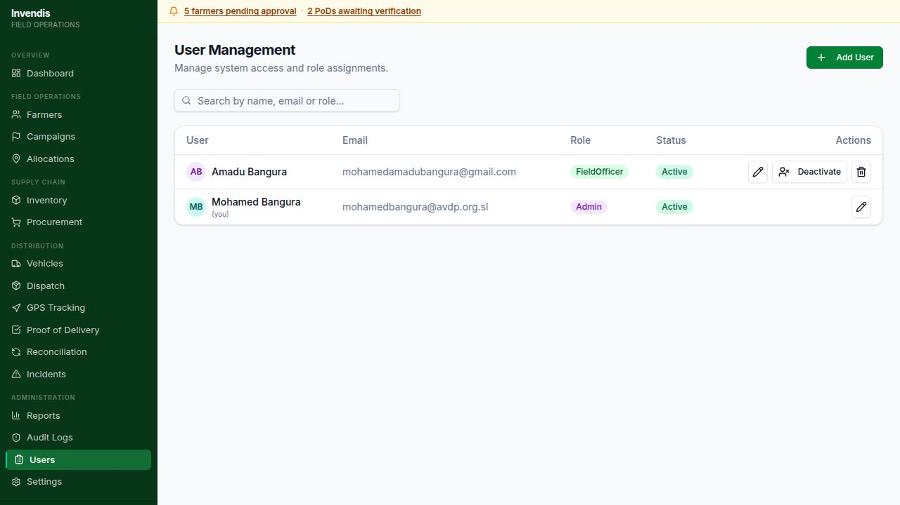
Test Coordinator, Email testcoordinator@agripo.sl, Role DistrictCoordinator, Password Invendis@2024| Role | Web Portal Access | Field App |
|---|---|---|
| Admin | All modules incl. Users, Settings, Audit | No |
| Project Manager | All operational modules | No |
| District Coordinator | Farmers, Campaigns, Reports, Incidents | No |
| Warehouse Manager | Inventory, Procurement, Dispatch, Reconciliation | No |
| Field Officer | Limited / none | Yes — full app |
| Viewer | Read-only across all modules | No |
The Audit Log records every system event with full user attribution and timestamps. It is append-only, providing a tamper-evident trail for compliance and investigation. An anomaly detection layer automatically flags suspicious patterns.
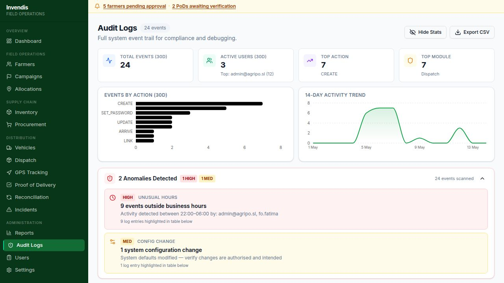
https://expo.dev/artifacts/eas/obY1z6QeFFi9MjMsUYwAJ6.apkThe field app authenticates via the same email/password as the web portal. A JWT token is stored securely on the device for all subsequent API calls, supporting offline continuity.
mohamedamadubangura@gmail.com, Password Invendis@2024/users in the web portal.
The Dispatch tab shows manifests that are In Transit or Arrived. The field officer selects the correct manifest before confirming any farmer delivery.
MAN-) using the search barThe Scan tab provides two lookup methods: fast camera-based QR scan for field use, and a manual text search fallback for damaged barcodes or low-light conditions.
Fatmata/farmers/:id before scanning.
This is the core field workflow. From the farmer profile, the officer confirms a delivery through three sequential verification steps, building a tamper-resistant record of who received what, where, and when.
50, Notes Delivered at community centre| Similarity Score | Badge Shown | Next Action |
|---|---|---|
| ≥ 80% | ✅ Face Verified | Tap Submit Delivery |
| < 80% | ❌ Match Failed | Tap Override + enter reason |
| No reference on file | ⚠️ No Reference | Photo saved; submit normally |
/pod.The app fully supports offline operation. Deliveries queued offline are uploaded in bulk when connectivity is restored, ensuring no data loss in remote areas.
/pod on the web portal.Field officers can report distribution issues, damaged goods, road incidents, or access problems directly from the app. Reports are synced to the web portal for supervisor resolution.
Distribution Issue, Description Farmer received damaged seed bags — 5 bags rejected/incidents shows it with the field officer's name./incidents and follow Scenario 10 to resolve itAfter completing all preceding scenarios, this final check confirms that data created in the field app is correctly reflected across every web portal module and that the full audit trail is intact.
/audit → filter by the field officer email/pod → locate the PoD from Scenario 17 → click to view detail/reports → Distribution tab → locate the manifest from Scenario 6/reports → Beneficiaries tab → check the district breakdown| Error Message | Likely Cause | Resolution |
|---|---|---|
"Invalid credentials" | Wrong email or password | Check credentials — password is Invendis@2024 |
"Account is inactive" | User deactivated by Admin | Admin reactivates at /users |
"Account profile not found" | First mobile login, profile not yet provisioned | Log in once via web portal first, then retry mobile |
"Invalid or expired code" | OTP expired (10 min) or wrong digits | Tap Resend to generate a fresh code |
"No farmer found for this barcode" | Farmer not registered or not approved | Approve farmer at /farmers/:id |
"Network request failed" | Device offline or API server down | Check connectivity; use Save Offline |
| Sync tab shows pending items | Records saved offline, not yet synced | Tap Sync Now when connected |
"OTP rate limit — try again in Xs" | OTP sent within 60-second cooldown | Wait for countdown to complete, then resend |
"Face match failed" | Live photo <80% similarity against reference | Retake in better lighting; or tap Override + reason |
Use this to track progress through all 20 scenarios. All items should be complete before system sign-off.